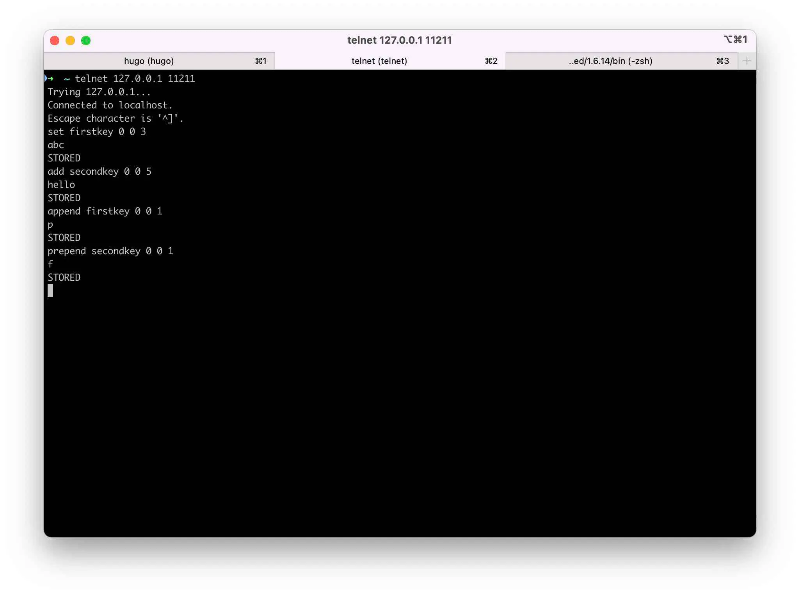
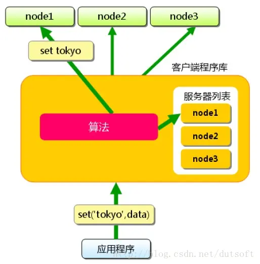
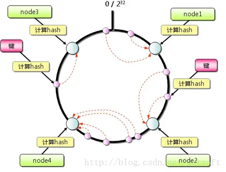
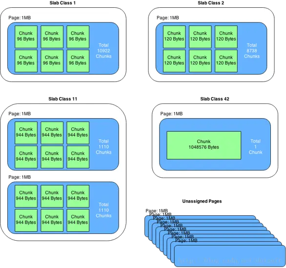

Memcached
AI 导读一分钟导读，先掌握全文主干。
核心观点
- Memcached 是读多写少纯 KV 缓存场景首选：协议简单、内存效率高、原生多线程
- 覆盖安装、存储/查找/删除/增减命令、过期时间语义与通讯协议
- 2026 现状：v1.6.45 仍在活跃迭代，Meta 协议与批量读取提升效率
关键结论与取舍
- 集群与扩展方案可选；挑替代时对照 Dragonfly / Valkey 2026 对比表
- 纯 KV 短值用 Memcached，需要数据结构操作则选 Redis
官方文档
Memcached 是读多写少「纯 KV 缓存」场景的首选：协议简单、内存效率高、原生多线程。本页覆盖安装、命令协议、内部结构，以及 2026 年的现状（v1.6.45、Meta 协议、Dragonfly/Valkey 对比），文末可直接查替代选型。
安装运行
# memcached 依赖 libevent
brew install memcached
brew services start memcached启动选项：
- -d 是启动一个守护进程；
- -m 是分配给 Memcached 使用的内存数量，单位是 MB；
- -u 是运行 Memcached 的用户；
- -l 是监听的服务器 IP 地址，可以有多个地址；
- -p 是设置 Memcached 监听的端口，默认 11211；
- -c 是最大运行的并发连接数，默认是 1024；
- -P 是设置保存 Memcached pid 文件的路径。
- -h 是显示帮助
使用
telnet localhost 11211 连上后输入 stats 查看运行状态，quit 退出。
存储命令
command <key> <flags> <expiration time> <bytes>
<value>参数说明如下：
- command set|add|replace|append|prepend
- key key 用于查找缓存值
- flags 可以包括键值对的整型参数，客户机使用它存储关于键值对的额外信息
- expiration time 在缓存中保存键值对的时间长度（以秒为单位，0 表示永远）
- bytes 在缓存中存储的字节数
- value 存储的值（始终位于第二行）
过期时间规则 ：expiration ≤ 30 天按相对秒数（60 = 60 秒后过期）；> 30 天按 Unix 时间戳解析。写超大过期值时注意别误传成时间戳，这是最常见的「一写就过期」原因。
expiration time 设置影响
-
缓存雪崩：短时间内大量键同时超时失效
-
缓存击穿：单个热点 key 失效瞬间被并发打穿
- 确实不存在：用布隆过滤器挡在缓存前
- 键超时：热点 key 设置永不超时 + 后台异步更新，受最大内存限制

| 命令 | 功能 |
|---|---|
| set | 没有则新增，有则更新，相当于 add+replace |
| add | 新增键值，有则不操作 |
| replace | 替换已存在的键值，不存在则不操作 |
| append | 向已存在的键值后面追加数据，不存在则不操作 |
| prepend | 向已存在的键值前面追加数据，不存在则不操作 |
查找命令
# 多个 key 用空格隔开
command key key key| 命令 | 功能 |
|---|---|
| get | 如果不存在，则返回空 |
| gets | 返回值附带 CAS 令牌（配合 cas 命令做并发更新） |
删除命令
delete key增加减少命令
# decr / incr
command key value对已存在的 key 的数字值进行自增或自减操作
清空命令
flush_all [time]可选参数 time，用于在指定的时间后执行清理缓存操作。
源代码proto_proxy.c部分代码
static int process_request(mcp_parser_t *pr, const char *command, size_t cmdlen) {
...
case 4:
if (strncmp(cm, "gets", 4) == 0) {
cmd = CMD_GETS;
type = CMD_TYPE_GET;
token_max = 2; // don't chew through multigets.
ret = _process_request_simple(pr, 2);
} else if (strncmp(cm, "incr", 4) == 0) {
cmd = CMD_INCR;
ret = _process_request_simple(pr, 4);
} else if (strncmp(cm, "decr", 4) == 0) {
cmd = CMD_DECR;
ret = _process_request_simple(pr, 4);
} else if (strncmp(cm, "gats", 4) == 0) {
cmd = CMD_GATS;
type = CMD_TYPE_GET;
ret = _process_request_gat(pr);
} else if (strncmp(cm, "quit", 4) == 0) {
cmd = CMD_QUIT;
}
break;
case 5:
if (strncmp(cm, "touch", 5) == 0) {
cmd = CMD_TOUCH;
ret = _process_request_simple(pr, 4);
} else if (strncmp(cm, "stats", 5) == 0) {
cmd = CMD_STATS;
// Don't process a key; fetch via arguments.
_process_tokenize(pr, token_max);
} else if (strncmp(cm, "watch", 5) == 0) {
cmd = CMD_WATCH;
_process_tokenize(pr, token_max);
}
break;
case 6:
if (strncmp(cm, "delete", 6) == 0) {
cmd = CMD_DELETE;
ret = _process_request_simple(pr, 4);
} else if (strncmp(cm, "append", 6) == 0) {
cmd = CMD_APPEND;
ret = _process_request_storage(pr, token_max);
}
break;
case 7:
if (strncmp(cm, "replace", 7) == 0) {
cmd = CMD_REPLACE;
ret = _process_request_storage(pr, token_max);
} else if (strncmp(cm, "prepend", 7) == 0) {
cmd = CMD_PREPEND;
ret = _process_request_storage(pr, token_max);
} else if (strncmp(cm, "version", 7) == 0) {
cmd = CMD_VERSION;
_process_tokenize(pr, token_max);
}
break;
...
}集群
-
多个节点，依赖代码库配合实现集群

-
减少扩容缩小节点影响，代码算法优化

内部结构

Slab Allocator 解决了内存碎片 问题，但按固定大小分配内存块，会有一定的内存浪费（内部碎片）
通讯协议
- 文本协议
直接用 telnet、nc 等工具都可以发送；\r\n 表示换行，[] 表示可选参数，会影响回包内容
#存储类命令(set,add等)
<command_name> <key> <flags> <exptime> <bytes>\r\n
#存储内容
<data_block>\r\n
#服务端回包,STORED成功,NOT_STORED失败
STORED\r\n
NOT_STORED\r\n#删除
delete <key> [<time>] [noreply]\r\n
#服务端回包
DELETED\r\n：表明执行成功
NOT_FOUND\r\n：表明没有找到这个键#自增减命令(incr,decr)
<command_name> <key> <value> [noreply]\r\n
#服务端回包
NOT_FOUND\r\n：没有找到数据项
<value>\r\n：数据项的新数值（自增或自减后的值）- 二进制协议：与文本协议命令等价，报文更紧凑、无需逐字符解析
主流客户端（libmemcached、各语言 SDK）默认走二进制协议；文本协议主要用于 telnet/nc 手工调试。
Memcached 2026 现状与对比
维护状态：仍在活跃迭代
Memcached 并未停摆：1.6.x 保持持续发布，1.6.45（2026-07-09） 为当前稳定版，官方 GitHub 仓库维护节奏正常，生产环境可放心继续使用。
- EXTSTORE ：SSD 扩展存储，热数据留内存、冷数据落盘，容量大幅扩展
- TLS ：1.6 起支持加密传输，公网部署可不再裸奔
- Meta 协议 ：更高效的读写与 TTL 管理（见下文）
定位始终保持简单：只做 KV 缓存，不做持久化、不玩复杂数据结构——这正是它十年如一日的可靠性来源。
Meta 协议与批量读取
Meta 协议用 mg / ms / ma 等命令替代老式 get / set ，一次往返即可完成读取、TTL 刷新与内存管理，比传统命令减少约一半网络往返：
# 批量读取：一次往返拿多个 key
> mg key1 key2 key3
VALUE key1 0 5
hello
# 写入并设置 TTL（60 秒）
> ms key1 60 5
hello- 省下的往返在超大 Value、热点 Key 场景收益最明显
- 配合
me/md（带过期语义的读/删）可实现原子化的分布式锁与限流
集群与扩展方案
- 官方没有内置集群：水平扩展靠客户端一致性哈希（如 ketama）与虚拟节点，故障时只影响少数缓存键
- 典型拓扑：多台实例 + Twemproxy / 自研代理层或直连客户端分片
- 相比 Redis Cluster：Memcached 集群更「裸」，没有元数据与 Gossip 开销，适合纯粹的缓存层
实践要点：缓存层设计成「可整体清空重建」，应用侧对缓存缺失做降级，Memcached 节点增减就无痛了。
替代与竞品：Dragonfly / Valkey（2026）
如果嫌 Memcached 太朴素，2026 年有两大主流替代：
- Dragonfly ：多线程共享内存架构，协议同时兼容 Redis 与 Memcached，Memcached 存量应用几乎零改动迁移，单机吞吐在官方基准中数倍于 Redis 单线程
- Valkey（Linux 基金会）：Redis 7.2 的社区分支，命令集兼容，若组织要求「纯开源治理」且想兼顾数据结构能力可评估替换
Memcached vs Redis（2026 更新对比）
| 特性 | Memcached | Redis |
|---|---|---|
| 数据结构 | 仅 KV（二进制/字符串） | String/List/Hash/Set/ZSet/Stream/JSON/向量 |
| 持久化 | 无（纯内存） | RDB + AOF，可当数据库用 |
| 集群 | 客户端一致性哈希分片 | 原生 Cluster + 分片 Pub/Sub |
| 多线程 | ✅ 原生多线程（默认） | 6.0+ IO 多线程，8.x 查询引擎 |
| 内存效率 | 更高（元数据更少） | 稍低（功能更多、编码更复杂） |
| 协议 | 文本 / 二进制 / Meta | RESP2 / RESP3 |
| 许可 | BSD（宽松） | RSAL/SSPL/AGPL 三选一（8+） |
| 适用场景 | 读多写少的纯 KV 缓存 | 缓存 + 数据库 + 消息队列 + 向量检索 |
结论：缓存层选 Memcached 简单高效；需要数据结构、持久化、消息或 AI 检索时选 Redis 8.x。